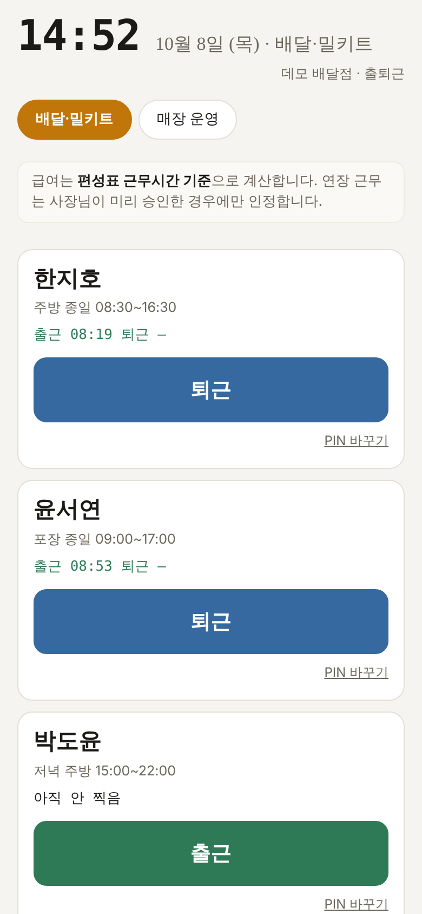
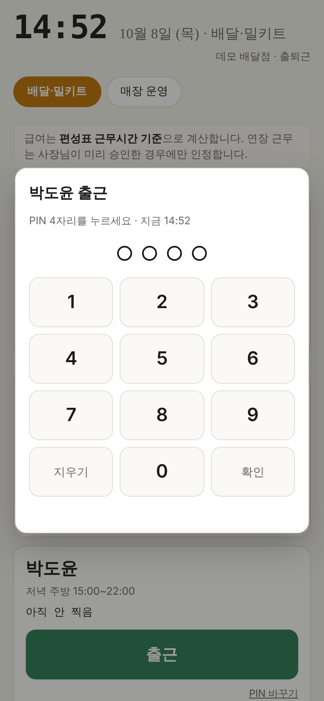
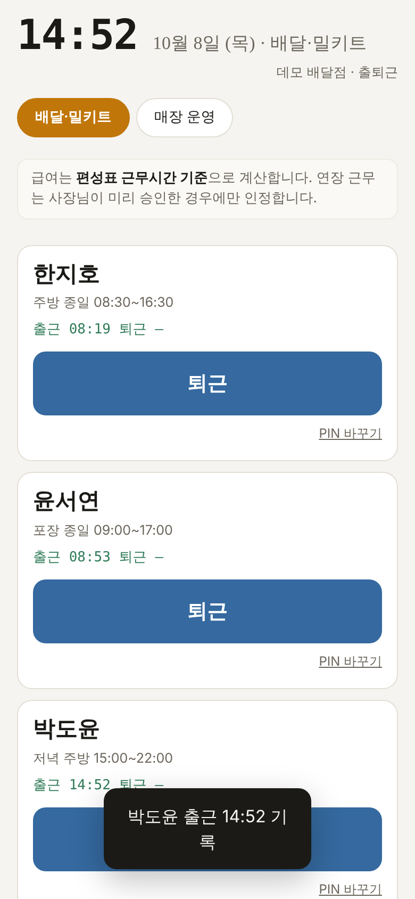
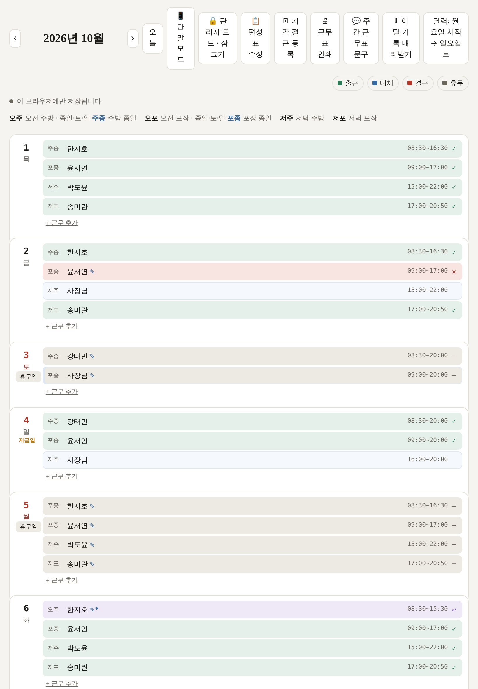
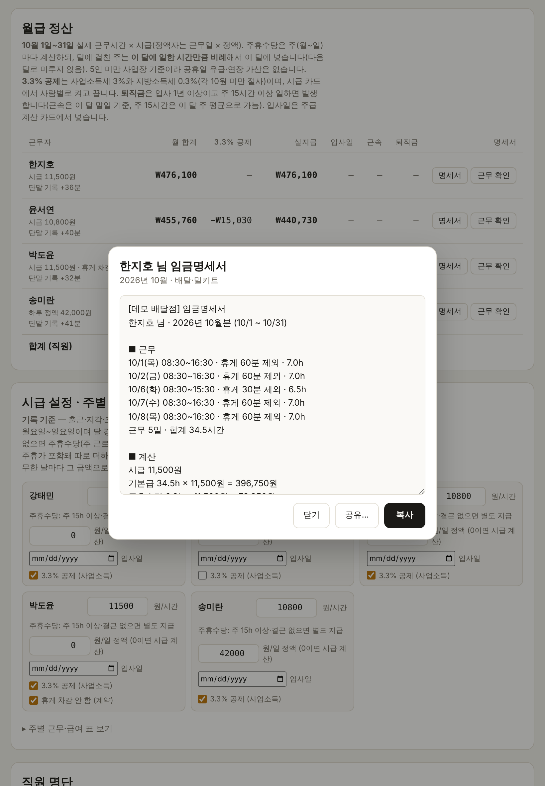
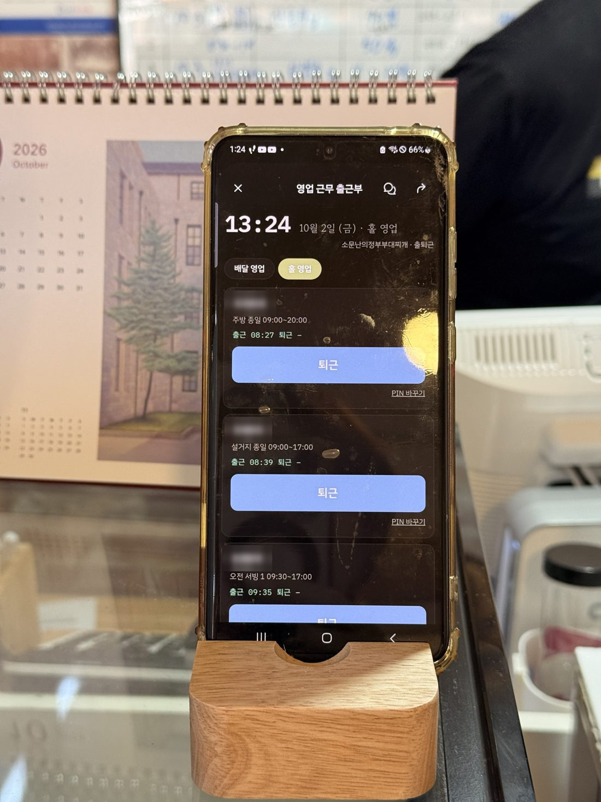
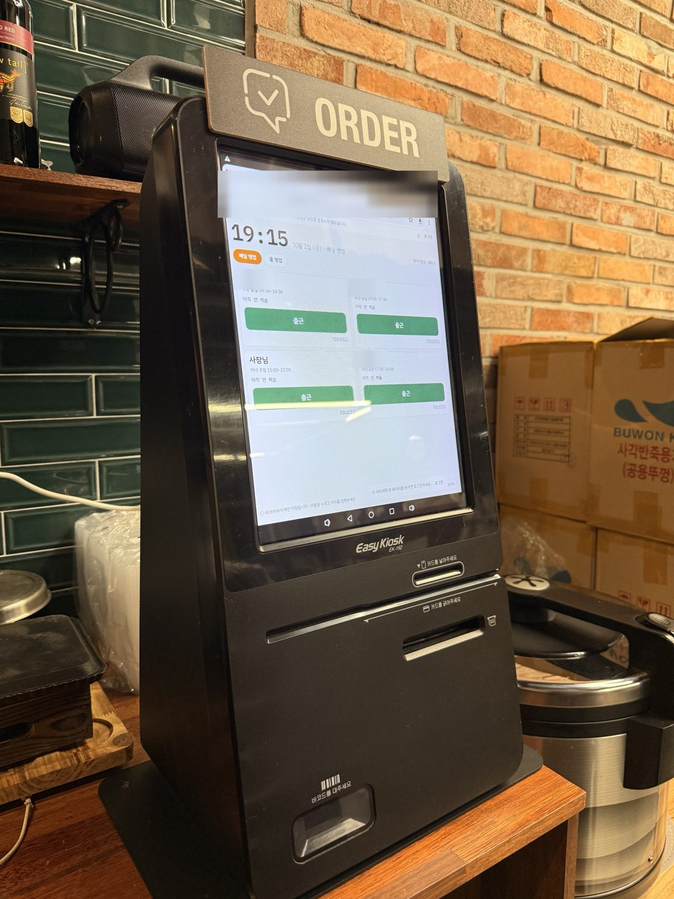
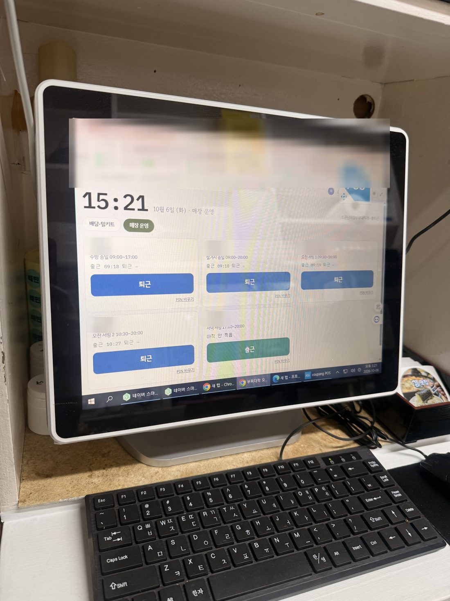

배민 AI 장사사관학교 실전 캠프 · 1조 · 2026.10.14
직원이 이름을 누르면
급여 계산이 끝나 있는 출근부
부찌대학 오늘근무 — 소문난의정부부대찌개 고대본점 · 이범례
이 자료의 화면은 모두 데모판(가상 직원 · 가상 기록)에서 찍었습니다. 실제 직원 이름과 시급은 나오지 않습니다.
① 우리 가게 이야기
고려대 정문 앞, 2013년부터 끓여 온 부대찌개집
- 채소와 남해 다시마로 매일 2시간 우린 채수, 직접 담가 숙성한 찌개전용김치
- 홀 매장과 배달 전문 매장, 두 곳을 부부가 나눠 맡습니다
- 직원은 11명 안팎. 대부분 시급제라 출퇴근 시각에 따라 급여가 매번 달라집니다
이번 캠프에서 고른 주제
1조 · 직원 급여 산정표
9/17 v1(근무·급여 원터치) → 9/26 출근부를 새로 만들기 시작 → 9/27부터 매장에서 사용
② 우리 가게의 문제
급여날마다 근무표를 펴 놓고 계산기를 두드렸습니다
급여날마다 근무표 펴놓고 계산기 두드리는 시간이 길고, 휴게시간·주휴수당 계산이 헷갈려 혹시 틀릴까 늘 마음이 쓰여서요. 계산은 도구에 맡기고, 저는 확인만 하고 싶습니다.
9/17 캠프 첫날 우리 가게 소개에 적은 글
그때 하던 순서
- 종이 근무표와 수첩을 편다
- 직원마다 카톡으로 "그날 몇 시에 왔고 몇 시에 갔는지" 서로 맞춘다
- 근무시간에서 휴게를 빼고, 주 15시간이 넘는지 보고 주휴수당을 따로 계산한다
걸린 시간과 실수
주급 한 번에 30분~1시간, 주급 직원은 매주
급여를 준 뒤에 "그날 더 일했는데요"라는 말을 듣고 다시 계산한 적이 있습니다
③ AI로 이렇게 만들어 써 봤어요
근무표 사진 한 장과 말 한마디에서 시작했습니다
10월달 직원 주간근무표야. 이자료를 토대로 월간 달력처럼 보기쉽게 실제 출근 상황을 체크하는 걸 만들고싶어. 가능할까?
맨 처음 AI에게 한 말 — 배달 매장 주간근무표 사진과 함께
- 홀 매장 근무표를 더하고 "시급과 근무시간을 넣으면 주급까지" 계산하게 넓혔습니다
- 그다음은 매장에서 쓰면서 필요한 것을 하나씩 말로 요청했습니다 — PIN 단말, 관리자 모드, 편성표 수정, 급여 명세서, 3.3% 공제, 공휴일 단축 영업, 결근·대체, 월급 정산
- 계획은 "매장 QR 찍기"였는데, 써 보니 이름 누르기 + PIN 4자리가 더 쉬워서 바꿨습니다
③ 시연 · 장면 1 — 직원이 찍는다
매장 폰에서 자기 이름을 누르고 숫자 네 자리

누르기 전 — 오늘 편성된 사람만 나옵니다

출근을 누르고 PIN 4자리

누른 뒤 — 찍은 시각이 바로 기록됩니다
일흔 가까운 직원분도 거부감 없이 쓰고 계십니다.
③ 시연 · 장면 2 · 3 — 사장이 확인하고, 계산은 끝나 있다
달력에서 한눈에 보고, 명세서는 복사해서 보냅니다

장면 2 · 관리자 달력 — 출근·지각·조퇴·결근·휴무가 색으로 보이고, 칸을 눌러 그날만 고칩니다

장면 3 · 명세서 — 근무일·휴게·주휴수당·공제가 적힌 글이 만들어져 있어, 복사해서 직원에게 보냅니다
④ 매장 적용 & 변화
저는 급여날 계산기 두드리던 문제를 "이름 눌러 찍는 출근부"로 풀었고, 주급 주는 시간이 30분쯤에서 10분 안으로 줄었어요
실제로 쓴 기록
14일째 사용
9/27 ~ 10/10 · 배달 매장 12일, 홀 매장 13일
직원이 단말에서 찍은 출근·퇴근 165번
도구에 쌓인 기록을 10/10에 세었습니다
주급 한 번 주는 데
30분쯤 → 10분 안
송금과 명세서 보내기까지 포함
지난 주급 1회 기준의 체감 시간입니다. 시계로 잰 값이 아니고, 같은 직원을 두 방법으로 비교한 것도 아닙니다
달라진 것
- 직원과 카톡으로 시각을 맞추던 일이 없어졌습니다
- 찍은 시각이 분 단위로 남아, 급여 근거를 직원에게 그대로 보여 줍니다
- 급여 줄 때 보내야 하는 명세서가 버튼 하나로 나옵니다
④ 시행착오
써 보면서 우리 가게 규칙에 맞게 고쳤습니다
| 써 보니 | 그래서 고친 것 |
|---|
| 5분 일찍 찍으면 그 5분까지 급여에 들어갔습니다. 우리 가게는 그렇게 정한 적이 없습니다 | 단말은 찍은 시각만 기록하고, 급여는 편성표 시간대로. 연장은 사장이 인정한 것만 넣습니다 |
| 10월부터 주급에서 월급으로 바꿉니다 | 10/1부터 월급 정산으로 계산하고, 주급으로 받는 사람만 "이번 주 지급"에 남겼습니다 |
| 편성이 바뀌는 주가 있습니다 | 시작일을 정해 "이 날부터 새 편성". 지난 날짜의 기록과 급여는 그대로 둡니다 (10/10에도 토요일 편성을 이렇게 바꿨습니다) |
| 출근부를 열 때마다 오늘 상황부터 보고 싶습니다 | 맨 위에 "오늘 한눈에" — 두 매장 출근 현황, 챙길 일, 이번 달 인건비 |
10월부터는 매출도 넣습니다
두 매장의 그날 매출을 넣으니, 그날 인건비가 얼마이고 매출의 몇 퍼센트인지 눈에 보입니다.
명세서는 자동 발송이 아니라 복사·공유해서 보냅니다. 카카오톡 자동 발송은 불안정하다는 젬마쌤 의견대로 그대로 두었습니다.
④ 시행착오 · 단말 이야기
단말은 새로 사지 않았습니다 — 가게에 놀던 기계를 썼습니다

처음 — 두 매장 모두 안 쓰는 핸드폰. 며칠 쓰니 방전돼서 불편했습니다

배달 매장 — 방치돼 있던 주문 키오스크. 링크를 지메일로 받아 열었더니 그대로 됐습니다

홀 매장 — 이모들이 "우리도 큰 걸로 해 주세요" 하셔서, 안 쓰던 포스 기계의 크롬으로
화면이 크고 밤에도 끄지 않아 늘 켜져 있습니다. 사진 속 직원 이름과 주소창은 가렸습니다.
⑤ 마음의 변화 & 한마디
계산은 도구가, 확인과 확정은 사장이
직원과 서로 맞춰 보고 달력에 적던 번거로움이 없어졌고, 주급 줄 때 계산기 대신 기록을 보고 명세서까지 바로 보낼 수 있어서 정말 좋았습니다.
v2 제출서에 적은 한 줄 소감
다른 사장님께
직원을 한 명이라도 둔 사장님이면 쓰기 좋겠습니다. 직원이 없어도 사장 본인의 출퇴근을 찍고 "내 시급"을 따져 보는 데 쓸 수 있습니다.
앞으로 해 보고 싶은 것
- 그날그날 지출 영수증의 식재료비와 비용까지 얹어, 원가율·재료비를 항목별로 보기
- 다른 가게도 자기 직원·시급을 넣어 쓸 수 있는 배포판